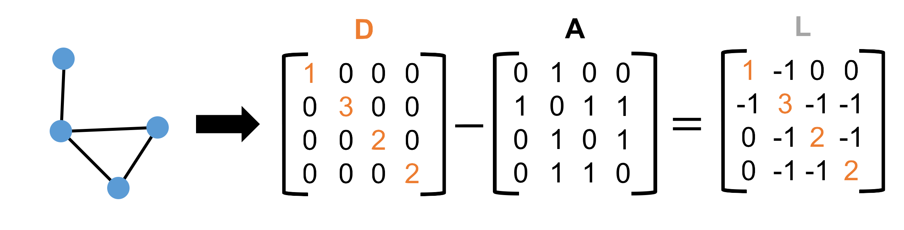
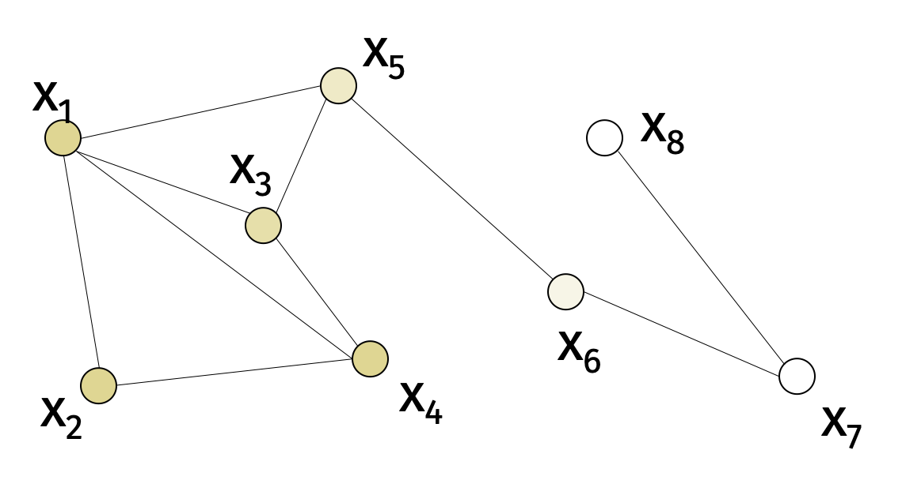
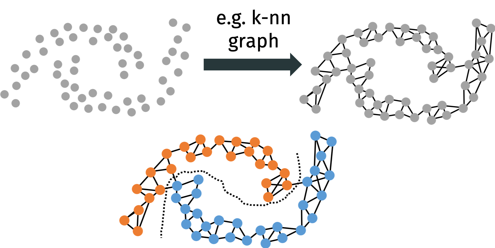
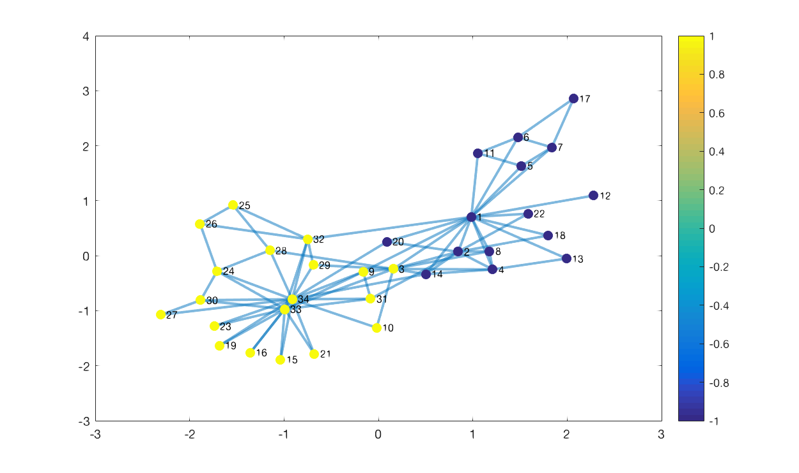
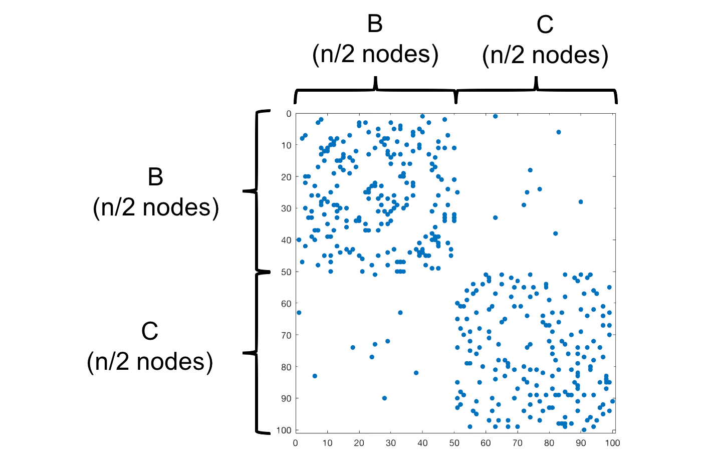
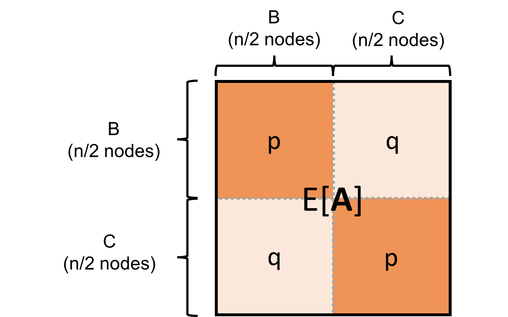
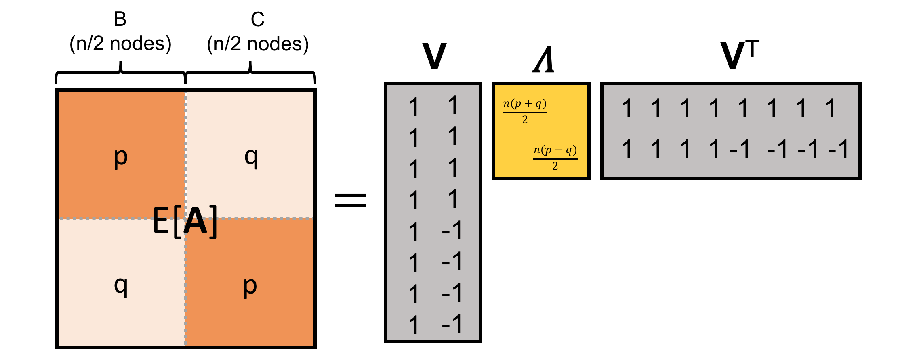
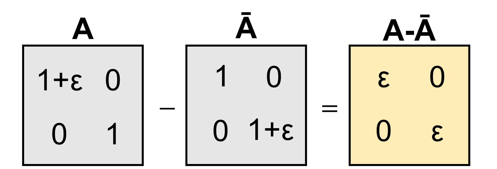

Spectral Graph Theory
The main idea of spectral graph theory is to understand graph data by constructing natural matrix representations and studying their spectrums.
There are many natural datasets that appear naturally as graphs:
Social networks like Facebook and Twitter.
Citation networks like Google Scholar.
Internet graphs like the World Wide Web.
For now, we will assume that a graph \(G=(V,E)\) is undirected and unweighted on \(n\) nodes.
There are two common matrix representations of a graph. The first is an \(n \times n\) adjacency matrix \(\mathbf{A}\) where \(A_{ij} = 1\) if \((i,j) \in E\) and \(A_{ij} = 0\) otherwise. The second is an \(n \times n\) Laplacian matrix \(\mathbf{L} = \mathbf{D} - \mathbf{A}\) where \(\mathbf{D}\) is the diagonal degree matrix with \(D_{ii} = \sum_{j=1}^n A_{ij}\).

It is also common to look at normalized versions of both matrices \[ \bar{\mathbf{A}} = \mathbf{D}^{-1/2} \mathbf{AD}^{-1/2} \qquad \mathbf{L} = \mathbf{I} - \bar{\mathbf{A}}. \]
The adjacency and Laplacian matrices contain a lot of information about the graph.
If \(\mathbf{L}\) has \(k\) eigenvalues equal to \(0\), then the graph \(G\) has \(k\) connected components.
The sum of cubes of the adjacency matrix’s eigenvalues is equal to the number of triangles in the graph times 6.
The sum of eigenvalues to the power \(q\) is proportional to the number of \(q\) cycles.
Today, we’ll see how eigenvectors are useful for clustering and visualizing graphs.
We’ll use the edge-incidence matrix \(\mathbf{B} \in \mathbb{R}^{m \times n}\) where \(m\) is the number of edges in the graph. Consider the edge \((i,j) \in [m]\) and the node \(k \in V\), then \[ B_{(i,j),k} = \begin{cases} 1 & \text{if } k = i \\ -1 & \text{if } k = j \\ 0 & \text{otherwise} \end{cases}. \]
We can write the Laplacian as \[ \mathbf{L} = \mathbf{B}^\top \mathbf{B} = \mathbf{b}_1 \mathbf{b}_1^\top + \mathbf{b}_2 \mathbf{b}_2^\top + \ldots + \mathbf{b}_m \mathbf{b}_m^\top \] where \(\mathbf{b}_i\) is the \(i\)th row of \(\mathbf{B}\) (each row corresponds to a single edge).
From this view, we can conclude that
For any vector \(\mathbf{x} \in \mathbb{R}^n\), \[ \mathbf{x}^\top \mathbf{L} \mathbf{x} = \mathbf{x}^\top \mathbf{B}^\top \mathbf{B} \mathbf{x} = \sum_{(i,j) \in E} (x_i - x_j)^2. \]
\(\mathbf{L}\) is positive semidefinite since \[ \mathbf{x}^\top \mathbf{L x} = \mathbf{x}^\top \mathbf{B}^\top \mathbf{B} \mathbf{x} = \| \mathbf{B} \mathbf{x} \|_2^2 \geq 0 \] for all \(\mathbf{x}\).
\(\mathbf{L} = \mathbf{V \Sigma^2 V}^\top\) where \(\mathbf{U \Sigma V}^\top\) is the SVD of \(\mathbf{B}\). In particular, the columns of \(\mathbf{V}\) are the eigenvectors of \(\mathbf{L}\).
With these observations in mind, consider the function \(f(\mathbf{x}) = \mathbf{x}^\top \mathbf{L x}\) for some vector \(\mathbf{x} \in \mathbb{R}^n\). Notice that \(f(\mathbf{x})\) is small if \(\mathbf{x}\) is smooth with respect to the graph. In terms of our linear algebraic view, if we plug a small eigenvector into \(f\), we get a small value.

We can formally see this connection through the the Courant-Fischer min-max principle. Let \(\mathbf{V} = [\mathbf{v}_1, \ldots, \mathbf{v}_n]\) be the eigenvectors of \(\mathbf{L}\) where \(\mathbf{v}_n\) corresponds to the smallest eigenvalue \(\lambda_n\). Then \[\begin{align*} \mathbf{v}_n &= \arg \min_{\|\mathbf{v}\|_2 =1} \mathbf{v}^\top \mathbf{L} \mathbf{v} \\ \mathbf{v}_{n-1} &= \arg \min_{\|\mathbf{v}\|_2 =1, \mathbf{v} \perp \mathbf{v}_n} \mathbf{v}^\top \mathbf{L} \mathbf{v} \\ &\vdots \\ \mathbf{v}_1 &= \arg \min_{\|\mathbf{v}\|_2 =1, \mathbf{v} \perp \mathbf{v}_n, \ldots, \mathbf{v} \perp \mathbf{v}_2} \mathbf{v}^\top \mathbf{L} \mathbf{v}. \end{align*}\]
Similarly, \[\begin{align*} \mathbf{v}_1 &= \arg \max_{\|\mathbf{v}\|_2 =1} \mathbf{v}^\top \mathbf{L} \mathbf{v} \\ \mathbf{v}_{2} &= \arg \max_{\|\mathbf{v}\|_2 =1, \mathbf{v} \perp \mathbf{v}_1} \mathbf{v}^\top \mathbf{L} \mathbf{v} \\ &\vdots \\ \mathbf{v}_n &= \arg \max_{\|\mathbf{v}\|_2 =1, \mathbf{v} \perp \mathbf{v}_1, \ldots, \mathbf{v} \perp \mathbf{v}_{n-1}} \mathbf{v}^\top \mathbf{L} \mathbf{v}. \end{align*}\]
Spectral Clustering
We can draw another conclusion from our observation that \(\mathbf{L} = \mathbf{B}^\top \mathbf{B}\). Let \(\mathbf{c} \in \{-1, 1\}^n\) be a cut indicator vector. Consider a set of vertices \(S \subseteq V\). We set \(\mathbf{c}_i = 1\) if \(i \in S\) and \(\mathbf{c}_i = -1\) otherwise. Then \[\begin{align*} \mathbf{c}^\top \mathbf{L} \mathbf{c} &= \mathbf{c}^\top \mathbf{B}^\top \mathbf{B} \mathbf{c} \\ &= \sum_{(i,j) \in E} (c_i - c_j)^2 \\ &= 4 \cdot \text{cut}(S, S^c). \end{align*}\] where \(\text{cut}(S, S^c)\) is the number of edges between \(S\) and its complement \(S^c\).
Partitioning a graph is an important problem in:
Understanding social networks,
Unsupervised machine learning (clustering),
Graph visualization, and
Mesh partitioning.
We will see how this problem can be solved heuristically using the eigenvectors of the Laplacian matrix.
In addition, we will give an “average case” analysis of the model for a common random graph model. The tools we will use are matrix concentration and eigenvector perturbation bounds.
Given a graph \(G = (V,E)\), we want to partition the vertices into two sets \(S\) and \(S^c\) such that
the number of edges between \(S\) and \(S^c\) is small and
\(S\) and \(S^c\) are each not too small.
An example of this problem is understanding community structure in social networks. In 1977, Zachary studied a karate club that split into two groups.
“At the beginning of the study there was an incipient conflict between the club president, John A., and Mr. Hi over the price of karate lessons. Mr. Hi, who wished to raise prices, claimed the authority to set his own lesson fees, since he was the instructor. John A., who wished to stabilize prices, claimed the authority to set the lesson fees since he was the club’s chief administrator. As time passed the entire club became divided over this issue, and the conflict became translated into ideological terms by most club members.”
Zachary constructed a social network by hand and used a minimum cut algorithm to correctly predict who would join each group. The paper is a classic in the field of social network analysis.
The problem is also generally useful for other clustering problems. Often, we can construct a synthetic graph for data that is hard to cluster.

Balanced cut algorithms are also used in many other applications including distributing data in graph databases, partitioning finite element meshes in scientific computing (e.g., that arise when solving differential equations), and more.
There are many ways to formalize the balanced cut problem.
\(\beta\)-Balanced Cut: Consider \(\beta \in [0,\frac12]\). Given a graph \(G = (V,E)\), the problem is to find the set \(S \subseteq V\)
\[\begin{align*} \arg \min_{S \subseteq V} \text{cut}(S, S^c) \quad \text{subject to} \quad \min( |S|, |S^c|) \geq \beta |V|. \end{align*}\]
Sparsest Cut: Given a graph \(G = (V,E)\), the problem is to find the set \(S \subseteq V\) \[\begin{align*} \arg \min_{S \subseteq V} \frac{\text{cut}(S, S^c)}{\min(|S|, |S^c|)}. \end{align*}\]
All natural formalizations lead to NP-hard problems. There is lots of interest in designing polynomial time approximation algorithms but these tend to be slow. In practice, there are much simpler methods based on the spectrum of the Laplacian matrix.
Generally, spectral methods run in at most \(O(n^3)\) time. The runtime can be further sped up if we use iterative methods for computing the eigenvectors.
The basic spectral clustering method is to:
Compute the second smallest eigenvector \(\mathbf{v}_{n-1}\) of a graph.
Define \(S\) as the nodes with positive entries in \(\mathbf{v}_{n-1}\).
Return the set \(S\).
Note that this algorithm should not make sense yet. Shortly, we will see how this method is a “relax and round” algorithm in disguise.
From the view of the Laplacian matrix, notice that
the cut size is \(\mathbf{c}^\top \mathbf{L} \mathbf{c} = 4 \cdot \text{cut}(S, S^c)\) and
the imbalance is \(|\mathbf{c}^\top \mathbf{1}|= ||S| - |S^c||\).
We want to minimize both the cut size and the imbalance.
We can reach an equivalent formulation if we divide everything by \(\sqrt{n}\) so that the cut indicator vector \(\mathbf{c}\) has norm 1. Then \(\mathbf{c} \in \{-\frac1{\sqrt{n}}, \frac1{\sqrt{n}}\}^n\) and
\(\mathbf{c}^\top \mathbf{L} \mathbf{c} = \frac{4}{n} \cdot \text{cut}(S, S^c)\)
\(|\mathbf{c}^\top \mathbf{1}| = \frac{1}{\sqrt{n}} \cdot ||S| - |S^c||\).
With this mathematical notation, the perfectly balanced cut problem is to find
\[\begin{align*} \min_{\mathbf{c} \in \{-\frac1{\sqrt{n}}, \frac1{\sqrt{n}}\}^n} \mathbf{c}^\top \mathbf{L} \mathbf{c} \quad \text{subject to} \quad |\mathbf{c}^\top \mathbf{1}| = 0. \end{align*}\]
We can also write the relaxed perfectly balanced cut problem to find
\[\begin{align*} \min_{\mathbf{c} : \|\mathbf{c}\|_2 = 1} \mathbf{c}^\top \mathbf{L} \mathbf{c} \quad \text{subject to} \quad |\mathbf{c}^\top \mathbf{1}| = 0. \end{align*}\]
Claim: The solution to the relaxed perfectly balanced cut problem is the second smallest eigenvector \(\mathbf{v}_{n-1}\) of \(\mathbf{L}\).
Proof: By the Courant-Fischer min-max principle, the smallest eigenvector of a graph Laplacian \(\mathbf{L}\) is \[\begin{align*} \mathbf{v}_n = \arg \min_{\mathbf{v}: \|\mathbf{v}\|_2 = 1} \mathbf{v}^\top \mathbf{L} \mathbf{v} \end{align*}\]. The smallest eigenvector is the constant vector \(\mathbf{1} \cdot \frac1{\sqrt{n}}\).
Again by the Courant-Fischer min-max principle, the second smallest eigenvector is \[\begin{align*} \mathbf{v}_{n-1} = \arg \min_{\mathbf{v}: \|\mathbf{v}\|_2 = 1, \mathbf{v}^\top \mathbf{v}_n=0} \mathbf{v}^\top \mathbf{L} \mathbf{v}. \end{align*}\] Since we know that \(\mathbf{v}_n = \mathbf{1} \cdot \frac1{\sqrt{n}}\), we know that \[\begin{align*} \mathbf{v}_{n-1} = \arg \min_{\mathbf{v}: \|\mathbf{v}\|_2 = 1, \mathbf{v}^\top \mathbf{1}=0} \mathbf{v}^\top \mathbf{L} \mathbf{v}. \end{align*}\] Notice this is exactly the relaxed perfectly balanced cut problem.
Our approach will be to find \(\mathbf{v}_{n-1}\). Then we will define \(S\) as all the nodes with positive entries in \(\mathbf{v}_{n-1}\). Succinctly, we will set the cut indicator vector \(\mathbf{c} = \text{sign}(\mathbf{v}_{n-1})\).

There are many variants of this approach used in practice.
Some methods perform normalization on the edge weights. For example, the Shi-Malik algorithm uses the normalized Laplacian \(\bar{\mathbf{L}} = \mathbf{I} - \mathbf{D}^{-1/2} \mathbf{A} \mathbf{D}^{-1/2}\).
Some methods choose different thresholds to compute the partitions.
Some methods split the graph into more than two partitions.
We’ll briefly discuss multiway spectral partitioning. The approach is as follows:
Compute the smallest \(\ell\) eigenvectors \(\mathbf{v}_{n-1}, \ldots, \mathbf{v}_{n-\ell}\) of \(\mathbf{L}\).
Represent each node by its corresponding row in the matrix \(\mathbf{V} \in \mathbb{R}^{n \times \ell}\) whose columns are \(\mathbf{v}_{n-1}, \ldots, \mathbf{v}_{n-\ell}\).
Cluster the rows using \(k\)-means clustering (or any other clustering algorithm).
Since we used a relaxed version of the perfectly balanced cut problem, it is not clear that the algorithm will work. However, intuitively, the vectors \(\mathbf{v} \in \{\mathbf{v}_{n-1}, \ldots, \mathbf{v}_{n-\ell}\}\) are smooth over the graph since \[ \mathbf{v}^\top \mathbf{L} \mathbf{v} = \sum_{(i,j) \in E} (v_i - v_j)^2 \] is small. The embedding explicitly encourages nodes connected by an edge to be placed in nearby locations in the embedding.
Average Case Analysis
So far, we showed that spectral clustering partitions a graph along a small cut between large pieces. Unfortunately, there are no formal guarantees on the quality of the partioning and it can fail for worst case input graphs.
We will consider a generative model that produces random but realistic inputs and analyze how the algorithm performs on graphs from this model. The general idea is common in algorithm design and analysis. Often, the approach is our best hope for understanding why some algorithms just work in practice. For example, linear regression is motivated by “average case” Bayesian modeling.
We will consider the stochastic block model (SBM) which is a random graph model that is commonly used to model social networks.
Stochastic Block Model: Let \(0<q < p < 1\). We will call \(G_n(p,q)\) a distribution over graphs on \(n\) nodes. Each graph is split equally into two blocks \(B\) and \(C\) each with \(\frac{n}{2}\) nodes. Any two nodes in the same group are connected with probability \(p\) (including self-loops) and any two nodes in different groups are connected with probability \(q\).
Consider the adjacency matrix \(\mathbf{A}\) of a graph \(G_n(p,q)\).

Note that we ordered the nodes in the adjacency matrix given in the figure. In reality, the order of the nodes would be “scrambled” and the blocks would not be so obvious.
Given a graph drawn from the stochastic block model \(G_n(p,q)\), our goal is to find the ground truth balanced partitions \(B\) and \(C\) using spectral clustering. Our first step is to understand the second smallest eigenvector of the Laplacian \(\mathbf{L} = \mathbf{D} - \mathbf{A}\). We will start by considering the expected matrices \(\mathbb{E}[\mathbf{L}] = \mathbb{E}[\mathbf{D}] - \mathbb{E}[\mathbf{A}]\).

We will use the simplicity of the expected adjacency matrix to understand the eigenvectors of the expected Laplacian matrix. The top eigenvector \(\mathbf{v}_1\) is proportional to the vector \(\mathbf{1}\) with the eigenvalue \(\lambda_1 = \frac{(p+q)n}{2}\). The second eigenvector \(\mathbf{v}_2\) is the cut indicator for groups \(B\) and \(C\) with eigenvalue \(\lambda_2 = \frac{(p-q)n}{2}\). We can check that the eigendecomposition is correct because there are only two eigenvectors.

Notice that if we correctly compute the second eigenvector \(\mathbf{v}_2\), then we can exactly recover the ground truth partition \(B\) and \(C\).
Because \(\mathbb{E}[\mathbf{L}] = \mathbb{E}[\mathbf{D}] - \mathbb{E}[\mathbf{A}]\), the second smallest eigenvector of \(\mathbb{E}[\mathbf{L}]\) is the second largest eigenvector of \(\mathbb{E}[\mathbf{A}]\). So we know that the cut indicator vector \(\mathbf{c}\) is the second smallest eigenvector of \(\mathbb{E}[\mathbf{L}]\).
If the random graph \(G\) drawn from the stochastic block model \(G_n(p,q)\) were exactly equal to its expectation, we could recover the ground truth partition \(B\) and \(C\). However, the graph \(G\) is not exactly equal to its expectation because of the randomness in the generative process.
Nonetheless, we will use matrix concentration to show that the eigenvectors of \(\mathbf{L}\) are close to the eigenvectors of \(\mathbb{E}[\mathbf{L}]\). The approach is analagous to scalar concentration inequalities that we’ve seen before like Markov’s, Chebyshev’s, and Chernoff’s inequalities.
Matrix Concentration Inequality: If \(p \geq O \left( \frac{\log^4 n}{n} \right)\), then with high probability \[\begin{align*} \| \mathbf{A} - \mathbb{E}[ \mathbf{A} ] \|_2 \leq O \left( \sqrt{pn} \right) \end{align*}\] where \(\| \cdot \|_2\) is the matrix spectral norm.
Recall that the spectral norm of a matrix \(\mathbf{A}\) is \[ \| \mathbf{A} \|_2 = \max_{\mathbf{x} :\|\mathbf{x}\|_2=1 } \| \mathbf{A} \mathbf{x} \|_2 = \sigma_1(\mathbf{A}) \] where \(\sigma_1(\mathbf{A})\) is the largest singular value of \(\mathbf{A}\).
When the graph is drawn from the stochastic block model, we know that the constant vector of the adjacency matrix is roughly the top eigenvector (because the smallest eigenvector of the Laplacian is roughly the constant vector). Then we know that spectral norm of the adjacency matrix \(\| \mathbf{A} \|_2\) is on the order of \(O(p \sqrt{n})\) so another way of thinking about the right hand side of the matrix concentration inequality is \(\| \mathbf{A}\|_2/\sqrt{p}\). In other words, the bound tightens as \(p\) increases.
For the stochastic block model application, we want to show that the second eigenvectors of \(\mathbf{A}\) and \(\mathbb{E}[\mathbf{A}]\) are close. For this, we will use the following theorem.
Davis-Kahan Eigenvector Perturbation Theorem: Suppose \(\mathbf{A}, \bar{\mathbf{A}} \in \mathbb{R}^{n \times n}\) are symmetric matrices with eigenvectors \(\mathbf{v}_1, \ldots, \mathbf{v}_n\) and \(\bar{\mathbf{v}}_1, \ldots, \bar{\mathbf{v}}_n\), respectively. Let \(\theta(\mathbf{v}, \bar{\mathbf{v}})\) denote the angle between two vectors \(\mathbf{v}\) and \(\bar{\mathbf{v}}\). Then \[\begin{align*} \sin \theta(\mathbf{v}_i, \bar{\mathbf{v}}_i) \leq \frac{\| \mathbf{A} - \bar{\mathbf{A}} \|_2 }{\min_{j \neq i} |\lambda_i - \lambda_j|} \end{align*}\] where \(\lambda_1 \geq \ldots \geq \lambda_n\) and are the eigenvalues of \(\bar{\mathbf{A}}\).
We can exhibit a matrix where the bound is tight. Let \(\mathbf{A}\) and \(\bar{\mathbf{A}}\) be the matrices in the figure below. The top eigenvector \(\mathbf{v}_1\) is \([1,0]\) whereas the top eigenvector \(\bar{\mathbf{v}}_1\) is \([0,1]\). The angle between these two vectors is \(\frac{\pi}{2}\) so \(\sin(\theta(\mathbf{v}_1, \bar{\mathbf{v}}_1)) = 1\). Since \(\lambda_1 = 1+\epsilon\) and \(\lambda_2 = 1\), the bound gives \(\frac{\epsilon}{\epsilon} = 1\).

We will apply the Davis-Kahan theorem to the stochastic block model with \(\bar{\mathbf{A}} = \mathbb{E}[\mathbf{A}]\).
Recall that \(\mathbb{E}[\mathbf{A}]\) has eigenvalues \(\lambda_1 = \frac{n(p+q)}{2}\) and \(\lambda_2 = \frac{n(p-q)}{2}\). Then \(\min_{j \neq i} |\lambda_i - \lambda_j| = \min( qn, \frac{n(p-q)}{2})\). Assume that \(\frac{n(p-q)}{2}\) is the minimum of these two gaps.
Then applying the matrix concentration inequality and the Davis-Kahan theorem, we get the following.
For \(p \geq O \left( \frac{\log^4 n}{n} \right)\), with high probability we have \[\begin{align*} \sin \theta(\mathbf{v}_2, \bar{\mathbf{v}}_2) &\leq \frac{O \left( \sqrt{pn} \right)}{\min_{j \neq i} |\lambda_i - \lambda_j|} \\ &\leq \frac{O \left( \sqrt{pn} \right)}{\frac{n(p-q)}{2}} \\ &= O \left( \frac{\sqrt{p}}{(p-q)\sqrt{n}} \right). \end{align*}\]
To relate the angle to the \(\ell_2\)-norm difference, consider two unit vectors \(\mathbf{a}\) and \(\mathbf{b}\). We have \[\begin{align*} \| \mathbf{a - b} \|_2^2 &= \| \mathbf{a} \|_2^2 + \| \mathbf{b} \|_2^2 - 2 \mathbf{a}^\top \mathbf{b} \\ &= 2 - 2 \cos(\theta) \\ &= 2 - 2 \sqrt{1-\sin^2(\theta)} \\ &\leq 2 - 2 (1-\sin^2(\theta) \\ & = 2 \sin^2(\theta) \end{align*}\] where the inequality follows since \(\sin^2(\theta) \leq 1\). Then \[\begin{align*} \| \mathbf{v}_2 - \bar{\mathbf{v}}_2 \|_2^2 \leq O \left( \frac{p}{(p-q)^2 n} \right). \end{align*}\]
We know that \(\bar{\mathbf{v}}_2\) is \(\frac1{\sqrt{n}} \cdot \mathbf{c}\) where \(\mathbf{c}\) is the cut indicator vector for the ground truth partition \(B\) and \(C\).
We want to show that \(\text{sign}(\mathbf{v}_2)\) is close to \(\mathbf{v}_2\). Notice they will only differ at locations where \(\mathbf{v}_2\) and \(\bar{\mathbf{v}}_2\) have opposite signs. Since every entry \(i\) that differs in sign contributes at least \(\frac1{n}\) to the squared \(\ell_2\) norm of \(\mathbf{v}_2 - \bar{\mathbf{v}}_2\), we know that \(\mathbf{v}_2\) and \(\bar{\mathbf{v}}_2\) differ in at most \(O \left( \frac{p}{(p-q)^2} \right)\) entries.
Average Case Result: If \(G\) is a stochastic block model graph with \(p \geq O \left( \frac{\log^4 n}{n} \right)\). Then if we compute the second largest eigenvector \(\mathbf{v}_2\) of \(\mathbf{A}\) and assign nodes to the communities according to the sign pattern of this vector, we will correctly assign all but \(O \left( \frac{p}{(p-q)^2} \right)\) nodes.
Notice that the error is small when \(p\) is large and \(q\) is small. The problem becomes more challenging when \(p \approx q\). In this setting, the Davis-Kahan theorem becomes loose and it is more difficult to tell the difference between the two groups.